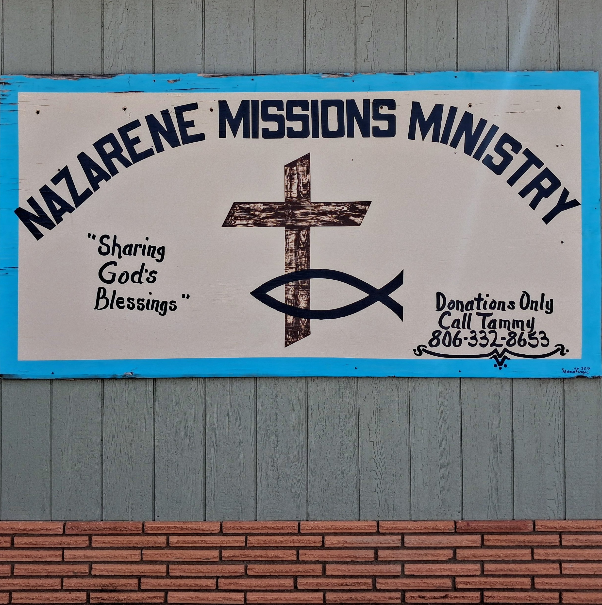

Everything on our shelves was given, not bought — and every sale goes right back into the community. Stop by on Saturday, or browse a few of our current finds below.
Browse this week's finds →Every item on our racks and shelves was donated by someone in this community. When you shop with us, you're not just finding a good deal — you're helping fund the outreach and mission work that this ministry exists to support. Volunteers sort, clean, and price everything by hand, and a portion of our shelves is set aside for pieces worth a special look — the kind of finds regulars come back for.
Can't make it in person? The shop page is updated by our volunteers throughout the week, so you can see what's caught our eye before doors open.

Have items to donate? Bring them by on a Saturday, or reach out to arrange a drop-off.
We’re launching live fundraisers on Whatnot to reach more people and fund more mission work. Expect curated lots, special finds, and a simple way to give from anywhere.
Nazarene Missions Ministry
Lamesa, Texas
Run entirely by volunteers
Email: hello@nazarene-missions.org
Phone: (000) 000‑0000
Update these with your real contact details.